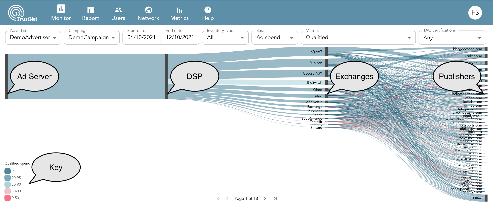
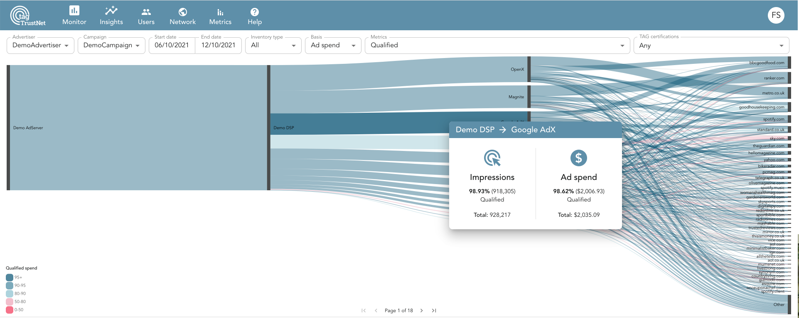
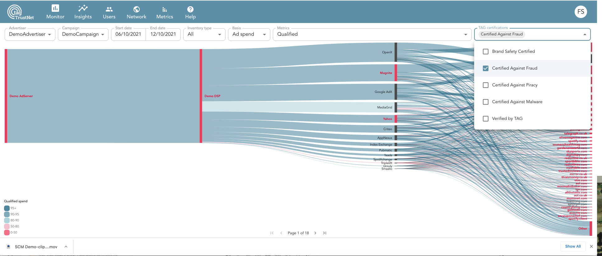
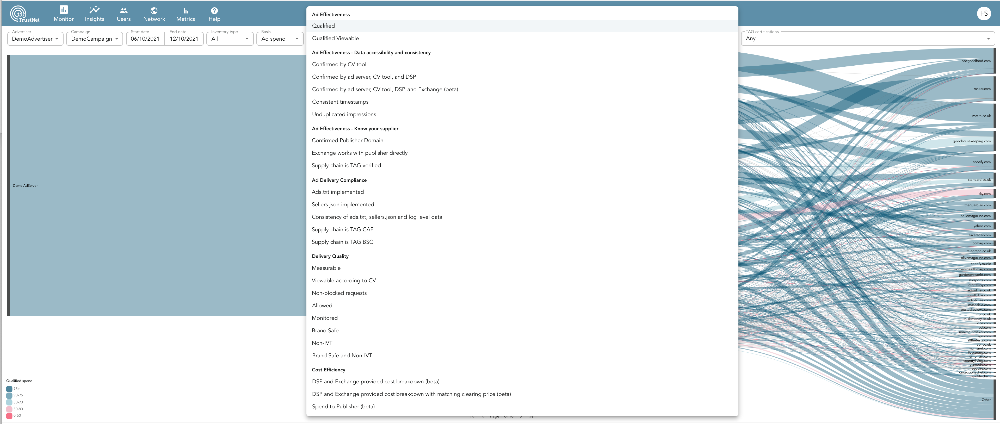

Supply Chain Monitor
The Supply Chain Monitor is only available in advertiser and agency nodes.
The Supply Chain Monitor provides a great way to see how well your entire supply chain is meeting any number of your important metrics. The following information is provided in this section:
- Supply Chain Monitor Overview
- Qualified impression
- Other Ad Effectiveness Metrics
- Cost Efficiency Metrics
Supply Chain Monitor Overview
Supply Chain Vendor Types
The following screenshot shows the where the different supply chain vendor types (Ad Server, DSP, Exchanges, and Publishers) appear within the Supply Chain Monitor.
In addition, there is a key in the lower left of the diagram. This key shows how well the inventory (represented by a line) between the different supply chain vendors meet the selected metric (which in this case is “Qualified”) based on the color of the line. The color at the top of this key indicates that 95% or more of the inventory was qualified..

Data About the Inventory Between Vendor Types
If you hover over the lines that appear between the different vendor types, you will see data about the inventory that is flowing between them. In the example below, the person has hovered over the line between the DSP and the Google AdX exchange, resulting in a tooltips box appearing that provides information specifically about the inventory from Google AdX that the DSP has purchased.

TAG Certifications
You can also see which vendors in your supply chain are verified or certified for any of the four TAG programs (Brand Safey Certified, Certified Against Fraud, Certified Against Malware, and Certified Against Piracy). In the example below, Certified Against Fraud has been selected. The vendors whose name or box are black indicate that they are currently enrolled in this program, and the ones in red are not. Note: the data below is just used for illustrative purposes and does not indicate the actual status of these companies.

Available Metrics
As you can see from the image below there are a number of metrics available in the Supply Chain Monitor. You can find definitions for all metrics in the Glossary.

Using the Supply Chain Monitor
Qualified Impression
The objective of having a qualified impression is to have a single metric that you can use to measure the overall ad effectiveness of your ad spend. This metric is usually defined by having an impression meet several requirements in ad quality, supply chain transparency, and data consistency.
In TAG TrustNet the default definition for a qualified impression is that it must be matched with data from all available buy-side platforms (including DSP, ad server and CV), is measurable, brand safe, non-IVT, and the domains that are reported by the CV tool and DSP are the same. This definition can be customized on request, and can be based on any combination of the metrics that appear within the Supply Chain Monitor.
Other Ad Effectiveness Metrics
There are a number of other metrics in the Supply Chain Monitor that allow you to assess your ad effectiveness by answering the following questions:
- Was the impression matched across the log files received from different supply chain vendor types (ad server, CV, DSP,and Exchange/SSP)?
- Was the timestamp of the impression that was recorded in the log files of the ad server, CV, and DSP platforms within 1 minute?
- Was the impression recorded only once by the DSP?
- Was the same domain recorded by the CV tool and DSP for the impression? This indicates that there was unlikely to be any domain spoofing.
- Did the exchange/SSP purchase the impression directly from the publisher?
- Is the entire supply chain for that impression TAG Verified?
- Does the publisher have an ads.txt file for that impression?
- Does the exchange/SSP have an sellers.json file for that impression?
- Is the publisher ID in the log file from the exchange/SSP consistent with what is stated in both the ads.txt and sellers.json file?
- Is the entire supply chain TAG Certified Against Fraud?
- Is the entire supply chain TAG Brand Safety Certified?
- Does the impression meet any number of the standard CV tool criteria (Measureable, Brand Safe, non-IVT, Viewable, etc.)
Cost Efficency Metrics
There are a number of metrics in the Supply Chain Monitor that allow you to assess your cost efficiency by answering the following questions:
- Did both the DSP and exchange/SSP provide cost data with the impression?
- Did both the DSP and exchange/SSP provide cost data, along with the clearing price with the impression?
- What percent of the ads spend went directly to the publisher for the impression?